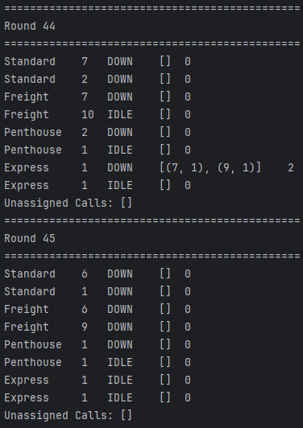
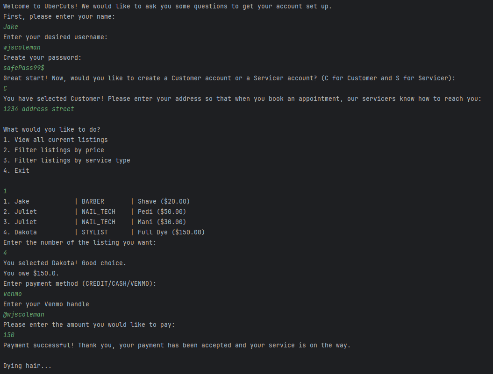

Hello! My name is Jake Coleman and I am a senior at the University of San Diego with a major in Sustainable Engineering, and minors in Computer Science and Math. I run division 1 cross country, and love exercising. I grew up in New York, and love both the East coast and West coast. Check out my athletics profile for more information on me and our cross country team.
I have experience as a Project Engineer Intern for Baker Electric in the commercial solar department, helping them generate rooftop solar plans for various real world projects. I also have worked in the Office of Sustainability at USD helping track and analyze our energy and water use. My expected graduation date is May 2026, and I am looking for jobs in the sustainable energy field. If you would like to connect with me, or are more interested in my professional work, check out my LinkedIn Profile.
I love running, swimming, cycling, hiking, video games, board games, and honestly any kind of activity with friends or family.
Projects

The Birthday Paradox
The Birthday Paradox essentially states that in a group of 23 people, there is more than a 50% chance that two people have the same birthday, and as the number in the group increases, even by small amounts, that probability greatly increases. This feels counter-intuitive since there are 365 potential birthdays a person can have. For this project we wanted to visualize this Birthday paradox with code.
Functional requirements/what the project does:
- Generates random birthdays for a group of 5 to 100 people, incrementing by 5
- Checks if any two birthdays match in these groups of people
- Each group of different numbers of people is randomly generated 20 times (for 20 trials)
- The results (percentage of trials with matching birthdays for the different groups) are displayed in side-by-side columns
Project design
This project had 4 classes that helped run the project:
- Simulation.java: Contains the PSVM method. Creates an Experiment for 5 to 100 people (incrementing by 5) with 20 trials each and prints the results
- Experiment.java: Runs the experiment, defined by the number of people and the number of trials it has. Yields the percentage of the trials that have a repeat birthday.
- Trial.java: Represents a trial within the experiment. Each trial has the number of people in the trial.
- Birthday.java: Represents a person and their birthday. Creates a random month and day for a birthday, assuming no leap years.
Implementation
For this project, I implemented the Simulation class, the Birthday class, and assisted in implementing clean code principles to all classes for better readability and debugging.

Elevator Simulator
While we don't often think about how an elevator in a building works or answers a call, this is an important part of how we can quickly move through building floors. I wanted to create an Elevator Simulator where I can customize how the elevators move to understand how elevators work and how they can be optimized for better performance.
Functional requirements/what the project does:
- The building that is simulated has 4 different kinds of elevators that behave differently: Standard, Freight, Penthouse, and Express.
- The simulator also has two types of elevator schedulers: A complex scheduler and a simple scheduler. These scheduler assign calls differently.
- The elevator simulation runs in rounds. Each round, a call is assigned, if possible, and the elevators move to their calls, or use the round to pick up/drop off people at the designated floors.
- The buildings that the elevators are in are determined by arguments passed into the program, and the building can have any amount of floors and any amount of the different types of elevators.
Project design
This project had 10 classes that helped run the project:
- Simulator.java: Contains the PSVM method. Runs the simulation and prints out the results of each round
- Call.java: Represents a call made by a person at a specific floor. Contains the floor the call was made from, and the floor they intend to go to.
- ComplexScheduler.java: This scheduler assigns calls to the elevator that can get there in the least amount of rounds
- SimpleScheduler.java: This scheduler assigns calls to the elftmost elevator in the building (determined by the order in which these elevators were added to the simulation).
- StandardElevator.java: This elevator can visit every floor. It will accept a new call if the pick up and drop off floors of the new call are in the same direction it is already travelling and would not cause it to change direction or it is waiting on the first floor.
- FreightElevator.java: This elevator can visit every floor. It will not take a new call unless it is empty and will not cause it to have more than one person at a time. If it has any calls it is working to service, it will not change direction to do a new call first.
- PenthouseElevator.java: This elevator can only travel between the top and ground floors. If empty, it can change direction to answer a call.
- ExpressElevator.java: This elevator only services the top half of the building and the ground floor. If occupied, it will accept a new call if the pick up and drop off floors of the new call are in the same direction it is already travelling and would not cause it to change direction or it is waiting on the first floor. If empty, it will change directions to answer a call.
- Scheduler.java: An abstract class that defines the general functions that all schedulers have.
- Elevator.java: An abstract class that defines the general functions that all elevators have.
Implementation
For this project, I implemented the Simulator class, the FreightElevator class, the PenthouseElevator class, the SimpleScheduler class, assisted with the Elevator and Scheduler abstract classes, and assisted in implementing clean code principles to all classes for better readability and debugging.


UberCuts
Haircuts are something everybody gets. Getting one can feel like a tedious chore, and prices can vary drastically depending on where you go. I wanted to create an application that can bring haircuts and other beauty services right to your door. Similar to Knack tutoring and Doordash, the app will have an interface where you can create an account and select from various listings from other people who are marketting their services. Once you select a service you like at the price you like, the servicer can accept the call and come to your address to complete the job. This application is a mock application, so it doesn't actually connect to a database or connect real people together
Functional requirements/what the project does:
- When the application runs, it will prompt the user to enter information to set up their account (like username, name, password)
- The application has two types of accounts that can be made: Customer and Servicer
- Customers must add their address to their account, and Servicers must add at least one service they can provide for a price to their account
- Customers can browse a feed of listings (service list) posted by Servicers, and they can select the listing they would like which will update the Servicer
- Servicers can post listings to the service list for the services they provide
- Customers can pay for the service they chose with a credit card, cash, or venmo, and the application will ask for the respective information depending on what they choose
- Customers can filter the service list based on their search criteria (filtering by price or by type of service)
Project design
This project had 15 classes that helped run the project, and was mainly structured and implemented using the Model-View-Controller design pattern.
- The Model consists of 13 different classes, and is in charge of all of the logic and processing of data to run the app.
- Contains customer and servicer object logic and interactions.
- Contains the service list and manages interactions here as well.
- Utilizes the strategy pattern for implementing the different payment methods (credit, venmo, and cash can be interchanged at runtime depending on user input.)
- The Controller consists of the AppController.java class, which communicates with the View and Model to update the view and give Model information for logic processing.
- The View is the TerminalView class to print out information in the terminal to the user, and give the user an interactive interface in the terminal.
- TerminalView implements the View interface, which allows us to add other interfaces (like a GUI) in the future without changing our Controller
Implementation
For this project, I implemented the Customer, CreditCardPayment, VenmoPayment, CashPayment, ServiceList, Listing, TerminalView, and Simulation classes. I also assisted in refactoring the AppController class to make it utilize the View in a manner that leave it open for extension in the future. All the classes that were implemented were done with test driven development to ensure full coverage and basic functionality of our program.
Contact Me
email address